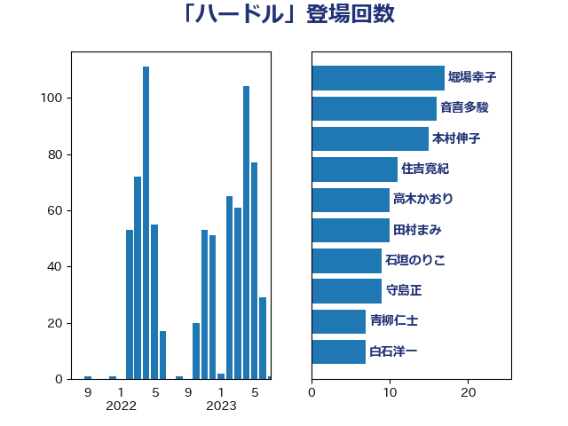

単語「ハードル」

| 堀場幸子 | 日本維新の会 | 17 回 |
| 音喜多駿 | 日本維新の会 | 16 回 |
| 本村伸子 | 日本共産党 | 15 回 |
| 住吉寛紀 | 日本維新の会 | 11 回 |
| 高木かおり | 日本維新の会 | 10 回 |
| 田村まみ | 国民民主党 | 10 回 |
| 石垣のりこ | 立憲民主党 | 9 回 |
| 守島正 | 日本維新の会 | 9 回 |
| 青柳仁士 | 日本維新の会 | 7 回 |
| 白石洋一 | 立憲民主党 | 7 回 |
| 柚木道義 | 立憲民主党 | 7 回 |
| 山田勝彦 | 立憲民主党 | 7 回 |
| 吉田はるみ | 立憲民主党 | 7 回 |
| 西岡秀子 | 国民民主党 | 6 回 |
| 福島みずほ | 社会民主党 | 6 回 |
| 源馬謙太郎 | 立憲民主党 | 6 回 |
| 川田龍平 | 立憲民主党 | 6 回 |
| 川合孝典 | 国民民主党 | 6 回 |
| 岬麻紀 | 日本維新の会 | 6 回 |
| 中川宏昌 | 公明党 | 6 回 |
| 緒方林太郎 | 無所属 | 5 回 |
| 福山哲郎 | 立憲民主党 | 5 回 |
| 浜田聡 | NHK党 | 5 回 |
| 松本剛明 | 自由民主党 | 5 回 |
| 庄子賢一 | 公明党 | 5 回 |
| 山添拓 | 日本共産党 | 5 回 |
| 山井和則 | 立憲民主党 | 5 回 |
| 和田有一朗 | 日本維新の会 | 5 回 |
| 倉林明子 | 日本共産党 | 5 回 |
| 佐々木さやか | 公明党 | 5 回 |
| 仁木博文 | 無所属 | 5 回 |
| 串田誠一 | 日本維新の会 | 5 回 |
| 高橋英明 | 日本維新の会 | 4 回 |
| 金子道仁 | 日本維新の会 | 4 回 |
| 野田佳彦 | 立憲民主党 | 4 回 |
| 近藤和也 | 立憲民主党 | 4 回 |
| 藤木眞也 | 自由民主党 | 4 回 |
| 羽田次郎 | 立憲民主党 | 4 回 |
| 緑川貴士 | 立憲民主党 | 4 回 |
| 稲津久 | 公明党 | 4 回 |
| 石川博崇 | 公明党 | 4 回 |
| 田中健 | 国民民主党 | 4 回 |
| 河野太郎 | 自由民主党 | 4 回 |
| 森山浩行 | 立憲民主党 | 4 回 |
| 宮本徹 | 日本共産党 | 4 回 |
| 高橋千鶴子 | 日本共産党 | 3 回 |
| 高橋克法 | 自由民主党 | 3 回 |
| 須藤元気 | 無所属 | 3 回 |
| 青山繁晴 | 自由民主党 | 3 回 |
| 長友慎治 | 国民民主党 | 3 回 |
| 鈴木義弘 | 国民民主党 | 3 回 |
| 足立康史 | 日本維新の会 | 3 回 |
| 芳賀道也 | 国民民主党 | 3 回 |
| 石川大我 | 立憲民主党 | 3 回 |
| 田村智子 | 日本共産党 | 3 回 |
| 浜口誠 | 国民民主党 | 3 回 |
| 横沢高徳 | 立憲民主党 | 3 回 |
| 梅谷守 | 立憲民主党 | 3 回 |
| 梅村みずほ | 日本維新の会 | 3 回 |
| 林芳正 | 自由民主党 | 3 回 |
| 東国幹 | 自由民主党 | 3 回 |
| 日下正喜 | 公明党 | 3 回 |
| 斎藤洋明 | 自由民主党 | 3 回 |
| 斎藤アレックス | 国民民主党 | 3 回 |
| 平木大作 | 公明党 | 3 回 |
| 平山佐知子 | 無所属 | 3 回 |
| 小野泰輔 | 日本維新の会 | 3 回 |
| 寺田静 | 無所属 | 3 回 |
| 宮本岳志 | 日本共産党 | 3 回 |
| 室井邦彦 | 日本維新の会 | 3 回 |
| 安江伸夫 | 公明党 | 3 回 |
| 大島敦 | 立憲民主党 | 3 回 |
| 塩川鉄也 | 日本共産党 | 3 回 |
| 城井崇 | 立憲民主党 | 3 回 |
| 土田慎 | 自由民主党 | 3 回 |
| 吉田とも代 | 日本維新の会 | 3 回 |
| 伊藤岳 | 日本共産党 | 3 回 |
| 伊藤孝恵 | 国民民主党 | 3 回 |
| 下野六太 | 公明党 | 3 回 |
| 齋藤健 | 自由民主党 | 2 回 |
| 馬場雄基 | 立憲民主党 | 2 回 |
| 馬場成志 | 自由民主党 | 2 回 |
| 階猛 | 立憲民主党 | 2 回 |
| 阿部弘樹 | 日本維新の会 | 2 回 |
| 阿部司 | 日本維新の会 | 2 回 |
| 鈴木英敬 | 自由民主党 | 2 回 |
| 鈴木庸介 | 立憲民主党 | 2 回 |
| 金村龍那 | 日本維新の会 | 2 回 |
| 野田聖子 | 自由民主党 | 2 回 |
| 西銘恒三郎 | 自由民主党 | 2 回 |
| 菊田真紀子 | 立憲民主党 | 2 回 |
| 舟山康江 | 国民民主党 | 2 回 |
| 米山隆一 | 立憲民主党 | 2 回 |
| 窪田哲也 | 公明党 | 2 回 |
| 福重隆浩 | 公明党 | 2 回 |
| 福島伸享 | 無所属 | 2 回 |
| 礒崎哲史 | 国民民主党 | 2 回 |
| 石川香織 | 立憲民主党 | 2 回 |
| 石井章 | 日本維新の会 | 2 回 |
| 田嶋要 | 立憲民主党 | 2 回 |
| 田中昌史 | 自由民主党 | 2 回 |
| 玄葉光一郎 | 立憲民主党 | 2 回 |
| 猪瀬直樹 | 日本維新の会 | 2 回 |
| 牧山ひろえ | 立憲民主党 | 2 回 |
| 湯原俊二 | 立憲民主党 | 2 回 |
| 浮島智子 | 公明党 | 2 回 |
| 浅野哲 | 国民民主党 | 2 回 |
| 池下卓 | 日本維新の会 | 2 回 |
| 森本真治 | 立憲民主党 | 2 回 |
| 森屋隆 | 立憲民主党 | 2 回 |
| 柴田巧 | 日本維新の会 | 2 回 |
| 柴愼一 | 立憲民主党 | 2 回 |
| 柳ヶ瀬裕文 | 日本維新の会 | 2 回 |
| 松本尚 | 自由民主党 | 2 回 |
| 有村治子 | 自由民主党 | 2 回 |
| 早稲田ゆき | 立憲民主党 | 2 回 |
| 新垣邦男 | 立憲民主党 | 2 回 |
| 斎藤嘉隆 | 立憲民主党 | 2 回 |
| 掘井健智 | 日本維新の会 | 2 回 |
| 打越さく良 | 立憲民主党 | 2 回 |
| 徳永エリ | 立憲民主党 | 2 回 |
| 平林晃 | 公明党 | 2 回 |
| 岸真紀子 | 立憲民主党 | 2 回 |
| 岩谷良平 | 日本維新の会 | 2 回 |
| 岩渕友 | 日本共産党 | 2 回 |
| 岡田直樹 | 自由民主党 | 2 回 |
| 山本香苗 | 公明党 | 2 回 |
| 山本太郎 | れいわ新選組 | 2 回 |
| 山本剛正 | 日本維新の会 | 2 回 |
| 山岡達丸 | 立憲民主党 | 2 回 |
| 山口壯 | 自由民主党 | 2 回 |
| 小野田紀美 | 自由民主党 | 2 回 |
| 小熊慎司 | 立憲民主党 | 2 回 |
| 寺田学 | 立憲民主党 | 2 回 |
| 宮崎勝 | 公明党 | 2 回 |
| 宮口治子 | 立憲民主党 | 2 回 |
| 奥野総一郎 | 立憲民主党 | 2 回 |
| 塩村あやか | 立憲民主党 | 2 回 |
| 吉田久美子 | 公明党 | 2 回 |
| 吉川元 | 立憲民主党 | 2 回 |
| 古賀之士 | 立憲民主党 | 2 回 |
| 加藤鮎子 | 自由民主党 | 2 回 |
| 前原誠司 | 国民民主党 | 2 回 |
| 井坂信彦 | 立憲民主党 | 2 回 |
| 井原巧 | 自由民主党 | 2 回 |
| 丸川珠代 | 自由民主党 | 2 回 |
| 中村裕之 | 自由民主党 | 2 回 |
| 中司宏 | 日本維新の会 | 2 回 |
| ながえ孝子 | 無所属 | 2 回 |
| たがや亮 | れいわ新選組 | 2 回 |
| 鬼木誠 | 立憲民主党 | 1 回 |
| 高良鉄美 | 無所属 | 1 回 |
| 高橋光男 | 公明党 | 1 回 |
| 青山大人 | 立憲民主党 | 1 回 |
| 青山周平 | 自由民主党 | 1 回 |
| 長妻昭 | 立憲民主党 | 1 回 |
| 鎌田さゆり | 立憲民主党 | 1 回 |
| 鈴木敦 | 国民民主党 | 1 回 |
| 鈴木俊一 | 自由民主党 | 1 回 |
| 金子恵美 | 立憲民主党 | 1 回 |
| 金子俊平 | 自由民主党 | 1 回 |
| 金城泰邦 | 公明党 | 1 回 |
| 野村哲郎 | 自由民主党 | 1 回 |
| 重徳和彦 | 立憲民主党 | 1 回 |
| 道下大樹 | 立憲民主党 | 1 回 |
| 辻清人 | 自由民主党 | 1 回 |
| 越智俊之 | 自由民主党 | 1 回 |
| 赤羽一嘉 | 公明党 | 1 回 |
| 赤木正幸 | 日本維新の会 | 1 回 |
| 谷合正明 | 公明党 | 1 回 |
| 谷公一 | 自由民主党 | 1 回 |
| 角田秀穂 | 公明党 | 1 回 |
| 西村明宏 | 自由民主党 | 1 回 |
| 藤巻健太 | 日本維新の会 | 1 回 |
| 自見はなこ | 自由民主党 | 1 回 |
| 羽生田俊 | 自由民主党 | 1 回 |
| 美延映夫 | 日本維新の会 | 1 回 |
| 篠原豪 | 立憲民主党 | 1 回 |
| 笠浩史 | 無所属 | 1 回 |
| 笠井亮 | 日本共産党 | 1 回 |
| 神谷裕 | 立憲民主党 | 1 回 |
| 畦元将吾 | 自由民主党 | 1 回 |
| 田村貴昭 | 日本共産党 | 1 回 |
| 猪口邦子 | 自由民主党 | 1 回 |
| 漆間譲司 | 日本維新の会 | 1 回 |
| 滝波宏文 | 自由民主党 | 1 回 |
| 渡辺周 | 立憲民主党 | 1 回 |
| 清水貴之 | 日本維新の会 | 1 回 |
| 浦野靖人 | 日本維新の会 | 1 回 |
| 浅川義治 | 日本維新の会 | 1 回 |
| 河西宏一 | 公明党 | 1 回 |
| 沢田良 | 日本維新の会 | 1 回 |
| 池畑浩太朗 | 日本維新の会 | 1 回 |
| 池田佳隆 | 自由民主党 | 1 回 |
| 水岡俊一 | 立憲民主党 | 1 回 |
| 比嘉奈津美 | 自由民主党 | 1 回 |
| 櫛渕万里 | れいわ新選組 | 1 回 |
| 梅村聡 | 日本維新の会 | 1 回 |
| 柳本顕 | 自由民主党 | 1 回 |
| 枝野幸男 | 立憲民主党 | 1 回 |
| 松野明美 | 日本維新の会 | 1 回 |
| 松川るい | 自由民主党 | 1 回 |
| 松島みどり | 自由民主党 | 1 回 |
| 東徹 | 日本維新の会 | 1 回 |
| 杉田水脈 | 自由民主党 | 1 回 |
| 杉本和巳 | 日本維新の会 | 1 回 |
| 杉尾秀哉 | 立憲民主党 | 1 回 |
| 本庄知史 | 立憲民主党 | 1 回 |
| 末松義規 | 立憲民主党 | 1 回 |
| 末松信介 | 自由民主党 | 1 回 |
| 朝日健太郎 | 自由民主党 | 1 回 |
| 星北斗 | 自由民主党 | 1 回 |
| 志位和夫 | 日本共産党 | 1 回 |
| 後藤茂之 | 自由民主党 | 1 回 |
| 平沼正二郎 | 自由民主党 | 1 回 |
| 川崎ひでと | 自由民主党 | 1 回 |
| 岡本あき子 | 立憲民主党 | 1 回 |
| 山崎誠 | 立憲民主党 | 1 回 |
| 山崎正恭 | 公明党 | 1 回 |
| 山岸一生 | 立憲民主党 | 1 回 |
| 山下芳生 | 日本共産党 | 1 回 |
| 小渕優子 | 自由民主党 | 1 回 |
| 小沼巧 | 立憲民主党 | 1 回 |
| 小林鷹之 | 自由民主党 | 1 回 |
| 小寺裕雄 | 自由民主党 | 1 回 |
| 小倉將信 | 自由民主党 | 1 回 |
| 寺田稔 | 自由民主党 | 1 回 |
| 宮崎雅夫 | 自由民主党 | 1 回 |
| 奥下剛光 | 日本維新の会 | 1 回 |
| 太栄志 | 立憲民主党 | 1 回 |
| 大島九州男 | れいわ新選組 | 1 回 |
| 塩田博昭 | 公明党 | 1 回 |
| 塩崎彰久 | 自由民主党 | 1 回 |
| 堂込麻紀子 | 無所属 | 1 回 |
| 堀内詔子 | 自由民主党 | 1 回 |
| 國重徹 | 公明党 | 1 回 |
| 吉良よし子 | 日本共産党 | 1 回 |
| 吉田宣弘 | 公明党 | 1 回 |
| 古川元久 | 国民民主党 | 1 回 |
| 古屋範子 | 公明党 | 1 回 |
| 北神圭朗 | 無所属 | 1 回 |
| 加藤勝信 | 自由民主党 | 1 回 |
| 保岡宏武 | 自由民主党 | 1 回 |
| 佐藤英道 | 公明党 | 1 回 |
| 佐藤正久 | 自由民主党 | 1 回 |
| 伊藤渉 | 公明党 | 1 回 |
| 伊藤俊輔 | 立憲民主党 | 1 回 |
| 伊波洋一 | 無所属 | 1 回 |
| 伊佐進一 | 公明党 | 1 回 |
| 仁比聡平 | 日本共産党 | 1 回 |
| 井上哲士 | 日本共産党 | 1 回 |
| 五十嵐清 | 自由民主党 | 1 回 |
| 中条きよし | 日本維新の会 | 1 回 |
| 上田清司 | 国民民主党 | 1 回 |
| 三浦信祐 | 公明党 | 1 回 |
| 三木圭恵 | 日本維新の会 | 1 回 |
| おおつき紅葉 | 立憲民主党 | 1 回 |
| あべ俊子 | 自由民主党 | 1 回 |